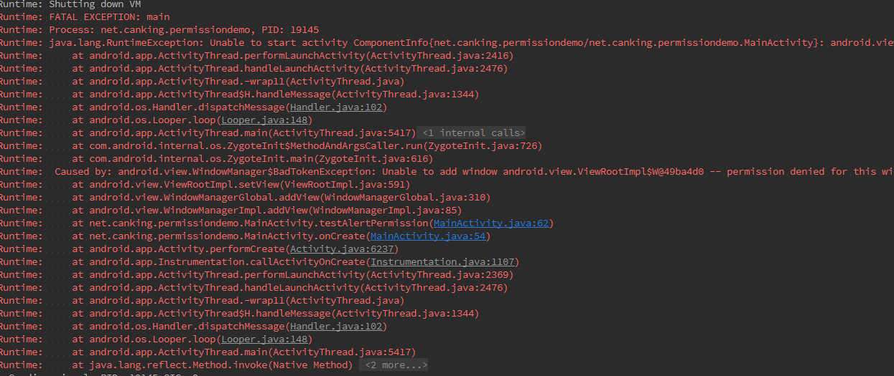
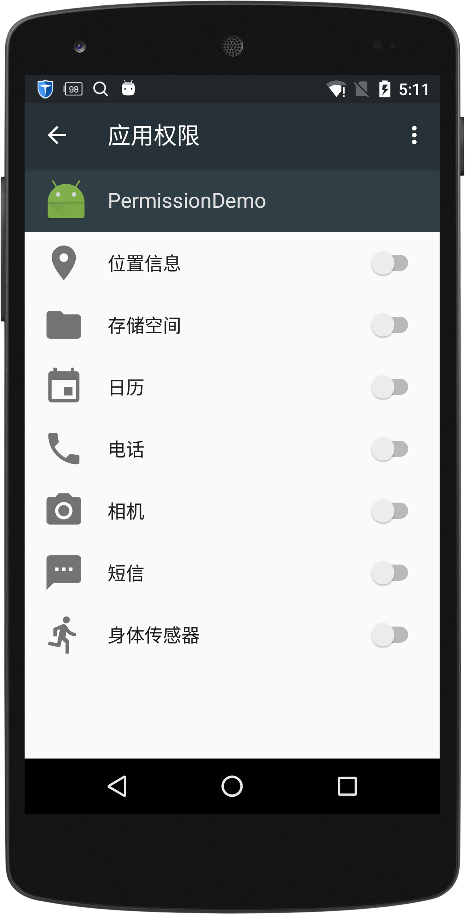
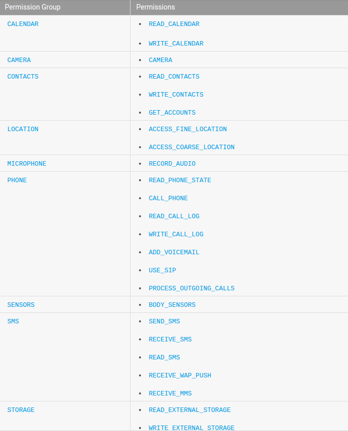
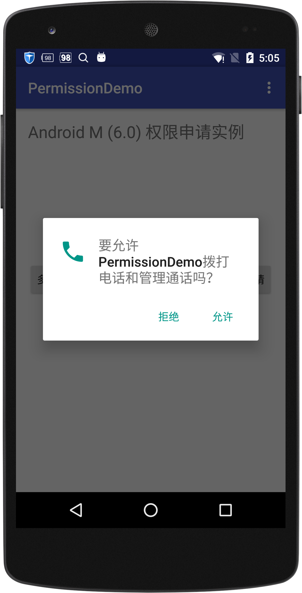
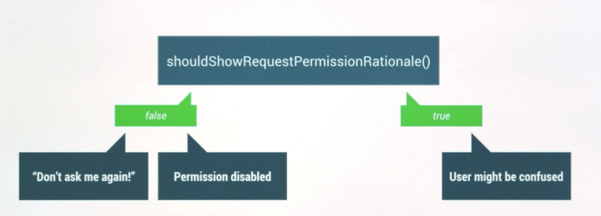
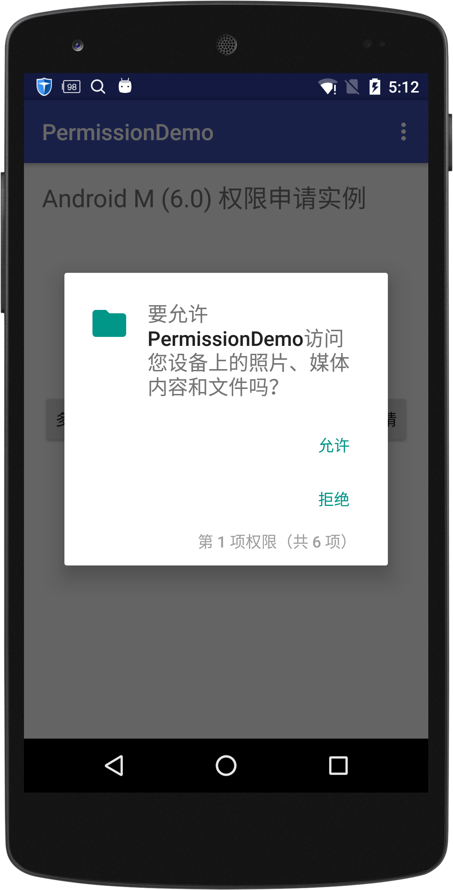
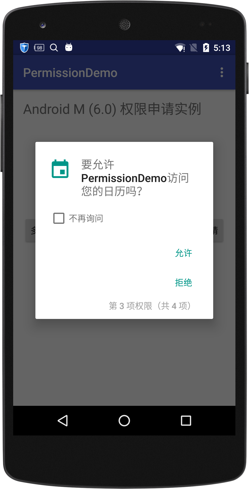
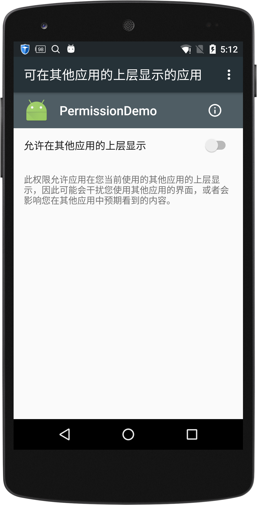

Android 6.0系统中权限问题调用 - Permission in Android M
安卓平台权限一直有被流氓应用随便利用诟病, android M的发布彻底解决了这一问题,取而代之的是，app不得不在运行时一个一个询问用户授予权限。
Android 6.0(api23)系统中,做了一些限制, 开发者在使用到每条权限时必须自己调用相关代码请求.
如果没有获得某项权限,直接使用相关功能,则会导致自己程序crash.

可见6.0以后的系统开发者必须对权限适配,否则软件随时都可能奔溃,那么问题来了~
已经发出去的版本或是targetSdkVersion小与23的apk怎么办?
废话,当然会崩了!!!
只要在满足在Android M上直接使用为授权的功能，程序必须Crash. targetSdkVersion<23的应用在安装时系统会默认全部授权应用在manifest中申请的权限，
不要应用这样你的应用就完事大全了．用户可以在以下页面或是其他应用关闭相关权限，然后…你的应用就没有然后了～

Android M 权限分类
安卓系统把权限分为了三类:
Normal Permissions
Dangerous Permissions
Special Permissions
Normal Permissions-一般权限
一般权限都是一些系统认为比较权限的权限，流氓应用就是拥有这些权限也干不出多大坏事，Normal 权限会在应用安装是直接授权，
官网解释：权限如下：
{kind=link}
ACCESS_LOCATION_EXTRA_COMMANDS
ACCESS_NETWORK_STATE
ACCESS_NOTIFICATION_POLICY
ACCESS_WIFI_STATE
BLUETOOTH
BLUETOOTH_ADMIN
BROADCAST_STICKY
CHANGE_NETWORK_STATE
CHANGE_WIFI_MULTICAST_STATE
CHANGE_WIFI_STATE
DISABLE_KEYGUARD
EXPAND_STATUS_BAR
FLASHLIGHT
GET_PACKAGE_SIZE
INTERNET
KILL_BACKGROUND_PROCESSES
MODIFY_AUDIO_SETTINGS
NFC
READ_SYNC_SETTINGS
READ_SYNC_STATS
RECEIVE_BOOT_COMPLETED
REORDER_TASKS
REQUEST_INSTALL_PACKAGES
SET_TIME_ZONE
SET_WALLPAPER
SET_WALLPAPER_HINTS
TRANSMIT_IR
USE_FINGERPRINT
VIBRATE
WAKE_LOCK
WRITE_SYNC_SETTINGS
SET_ALARM
INSTALL_SHORTCUT
UNINSTALL_SHORTCUT
Dangerous Permissions－危险权限
这些权限都是一些敏感性权限，一些广告平台或是流氓应用会用这些权限干一些坏坏的事情，因此系统将这类权限分了几个类别，
应用每次都要检测下是否有权限，没有的化必须弹出对话框申请，只要一个组别中的一个权限得到了授权，整个组的权限都会的到授权．
这部分权限也是我们重点在Ｍ系统上关注和适配的部分．
官网权威说明, 具体相关权限见图：

Special Permissions- 特殊权限
SYSTEM_ALERT_WINDOW and WRITE_SETTINGS, 这两个权限比较特殊，不能通过代码申请方式获取，必须得用户打开软件设置页手动打开，才能授权．
There are a couple of permissions that don’t behave like normal and dangerous permissions. SYSTEM_ALERT_WINDOW and WRITE_SETTINGS are particularly sensitive, so most apps should not use them. If an app needs one of these permissions, it must declare the permission in the manifest, and send an intent requesting the user’s authorization. The system responds to the intent by showing a detailed management screen to the user.
实战Android m权限申请用法
我们对相关申请方法封装成了工具类，方便ｍ系统适配随时调用．
相关配置
compileSdkVersion and targetSdkVersion 设置为 23开始
调用相关权限
private void testAlertPermission() {
WindowManager mWindowManager = (WindowManager) getSystemService(
Context.WINDOW_SERVICE);
WindowManager.LayoutParams params = new WindowManager.LayoutParams();
params.type = WindowManager.LayoutParams.TYPE_SYSTEM_ALERT;
mWindowManager.addView(new TextView(this), params);
}
权限申请相关代码
// Here, thisActivity is the current activity
if (ContextCompat.checkSelfPermission(thisActivity,
Manifest.permission.READ_CONTACTS)
!= PackageManager.PERMISSION_GRANTED) {
// Should we show an explanation?
if (ActivityCompat.shouldShowRequestPermissionRationale(thisActivity,
Manifest.permission.READ_CONTACTS)) {
// Show an expanation to the user *asynchronously* -- don't block
// this thread waiting for the user's response! After the user
// sees the explanation, try again to request the permission.
} else {
// No explanation needed, we can request the permission.
ActivityCompat.requestPermissions(thisActivity,
new String[]{Manifest.permission.READ_CONTACTS},
MY_PERMISSIONS_REQUEST_READ_CONTACTS);
// MY_PERMISSIONS_REQUEST_READ_CONTACTS is an
// app-defined int constant. The callback method gets the
// result of the request.
}
}
requestPermissions方法调用时会弹出以下对话框．当用户点击拒绝并且勾选了不再弹出后这个对话框将不会再弹出，会直接拒绝掉该权限：

shouldShowRequestPermissionRationale方法说明
用户拒绝，或是不在弹出，这个方法会返回false．

Ａctivity和Ｆragment的申请方法不一样，所以我们对方法做了包装如下：
@TargetApi(Build.VERSION_CODES.M)
public static boolean checkPermission(Object cxt, String permission, int requestCode) {
if (!checkSelfPermissionWrapper(cxt, permission)) {
if (!shouldShowRequestPermissionRationaleWrapper(cxt, permission)) {
requestPermissionsWrapper(cxt, new String[]{permission}, requestCode);
} else {
Log.d(TAG, "should show rational");
}
return false;
}
return true;
}
private static void requestPermissionsWrapper(Object cxt, String[] permission, int requestCode) {
if (cxt instanceof Activity) {
Activity activity = (Activity) cxt;
ActivityCompat.requestPermissions(activity, permission, requestCode);
} else if (cxt instanceof Fragment) {
Fragment fragment = (Fragment) cxt;
fragment.requestPermissions(permission, requestCode);
} else {
throw new RuntimeException("cxt is net a activity or fragment");
}
}
权限可以一次申请多个
如图一次可以申请多个权限，但是用户还是一个一个授权．我们对该请求也做了封装：
 
@TargetApi(23)
private static boolean checkSelfPermissionWrapper(Object cxt, String permission) {
if (cxt instanceof Activity) {
Activity activity = (Activity) cxt;
return ActivityCompat.checkSelfPermission(activity,
permission) == PackageManager.PERMISSION_GRANTED;
} else if (cxt instanceof Fragment) {
Fragment fragment = (Fragment) cxt;
return fragment.getActivity().checkSelfPermission(permission) == PackageManager.PERMISSION_GRANTED;
} else {
throw new RuntimeException("cxt is net a activity or fragment");
}
}
private static String[] checkSelfPermissionArray(Object cxt, String[] permission) {
ArrayList<String> permiList = new ArrayList<>();
for (String p : permission) {
if (!checkSelfPermissionWrapper(cxt, p)) {
permiList.add(p);
}
}
return permiList.toArray(new String[permiList.size()]);
}
权限返回处理
在activity或fragment 中重写onRequestPermissionsResult，用户处理相关权限后会回调该方法，当活取到相关应用后可以继续原来的逻辑．
@Override
public void onRequestPermissionsResult(int requestCode, String[] permissions, int[] grantResults) {
switch (requestCode) {
case PermissionUtils.PERMISSION_REQUEST_CODE:
if (PermissionUtils.verifyPermissions(grantResults)) {
// Permission Granted
// do you action
} else {
// Permission Denied
Toast.makeText(this, "WRITE_CONTACTS Denied", Toast.LENGTH_SHORT)
.show();
}
break;
default:
super.onRequestPermissionsResult(requestCode, permissions, grantResults);
}
}
public static boolean verifyPermissions(int[] grantResults) {
// At least one result must be checked.
if (grantResults.length < 1) {
return false;
}
// Verify that each required permission has been granted, otherwise return false.
for (int result : grantResults) {
if (result != PackageManager.PERMISSION_GRANTED) {
return false;
}
}
return true;
}
特殊权限的申请
以前特殊权限说明地方已经支出，该类权限需求intent到具体的设置页面，让用户手动打开，才能授权．
同样重写onActivityResult方法，返回该页面时做回调处理．

系统弹出权限，相关代码实例：
/**
* 检测系统弹出权限
* @param cxt
* @param req
* @return
*/
@TargetApi(23)
public static boolean checkSettingAlertPermission(Object cxt, int req) {
if (cxt instanceof Activity) {
Activity activity = (Activity) cxt;
if (!Settings.canDrawOverlays(activity.getBaseContext())) {
Log.i(TAG, "Setting not permission");
Intent intent = new Intent(Settings.ACTION_MANAGE_OVERLAY_PERMISSION,
Uri.parse("package:" + activity.getPackageName()));
activity.startActivityForResult(intent, req);
return false;
}
} else if (cxt instanceof Fragment) {
Fragment fragment = (Fragment) cxt;
if (!Settings.canDrawOverlays(fragment.getActivity())) {
Log.i(TAG, "Setting not permission");
Intent intent = new Intent(Settings.ACTION_MANAGE_OVERLAY_PERMISSION,
Uri.parse("package:" + fragment.getActivity().getPackageName()));
fragment.startActivityForResult(intent, req);
return false;
}
} else {
throw new RuntimeException("cxt is net a activity or fragment");
}
return true;
}
@Override
protected void onActivityResult(int requestCode, int resultCode, Intent data) {
if (requestCode == PermissionUtils.PERMISSION_SETTING_REQ_CODE) {
if (Build.VERSION.SDK_INT >= Build.VERSION_CODES.M) {
if (Settings.canDrawOverlays(this)) {
// do something
} else {
Toast.makeText(this, "not has setting permission", Toast.LENGTH_LONG).show();
finish();
}
}
}
}
结语
Android 6.0系统权限管理是安卓系统的一大进步，为安卓手机用户提供了一个安全干净系统前提，鉴于google对未授权应用的奔溃方式处理，
安卓开发者应当尽早适配6.0系统，提示软件体验．
实战整体代码已提交到GitHub,欢迎下载交流学习～
License
Copyright 2015 ChangXing
Licensed under the Apache License, Version 2.0 (the "License");
you may not use this file except in compliance with the License.
You may obtain a copy of the License at
http://www.apache.org/licenses/LICENSE-2.0
Unless required by applicable law or agreed to in writing, software
distributed under the License is distributed on an "AS IS" BASIS,
WITHOUT WARRANTIES OR CONDITIONS OF ANY KIND, either express or implied.
See the License for the specific language governing permissions and
limitations under the License.